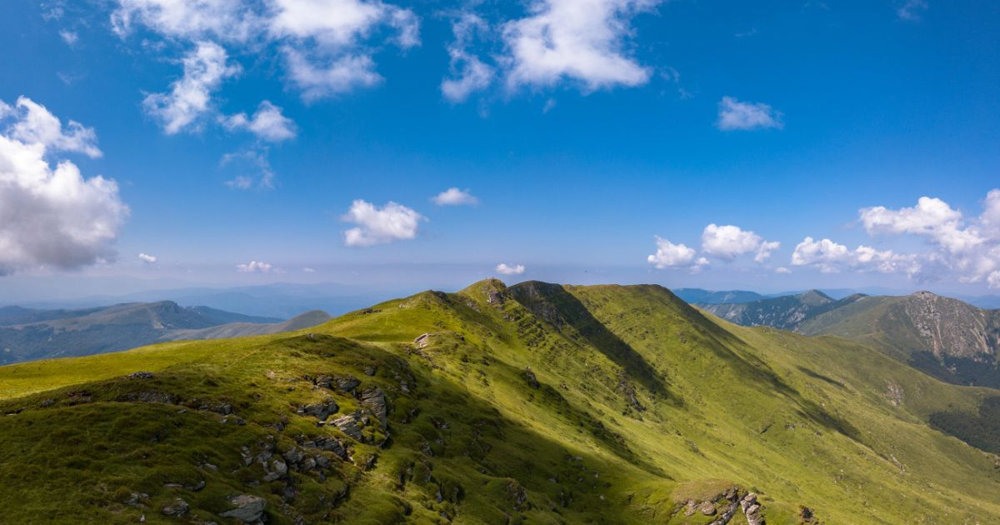

На 3-то място ще ви представим Стара планинa
Стара планина е най-дългата наша планина. Простира се почти по средата на България, в посока от запад на изток- от долината на р. Тимок до Черно море. Има дължина 555 км и ширина от 20 да 60 км. На юг стръмните старопланински склонове опират до Задбалканските котловини. На север главното старопланинско било постепенно прехожда в по-ниски предпланински части.
Най-висок връх-Ботев (2376м). Изходни пунктове за изкачване са хижите "Рай", "Плевен", "Тъжа", "В.Левски", ""Добрила" и градовете Калофер, Априлци, Карлово.
Стара планина е силно разчленена от долините на реките Огоста, Искър, Вит, Осъм, Росица, Янтра, Камчия и техните притоци.
Обратно към главната страница